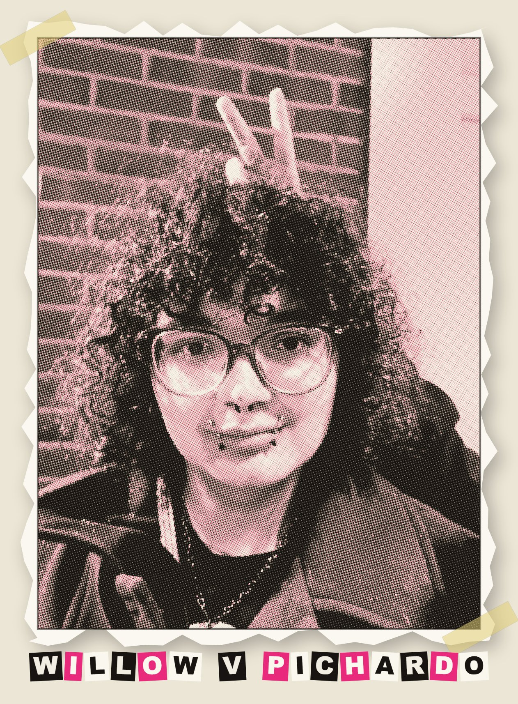
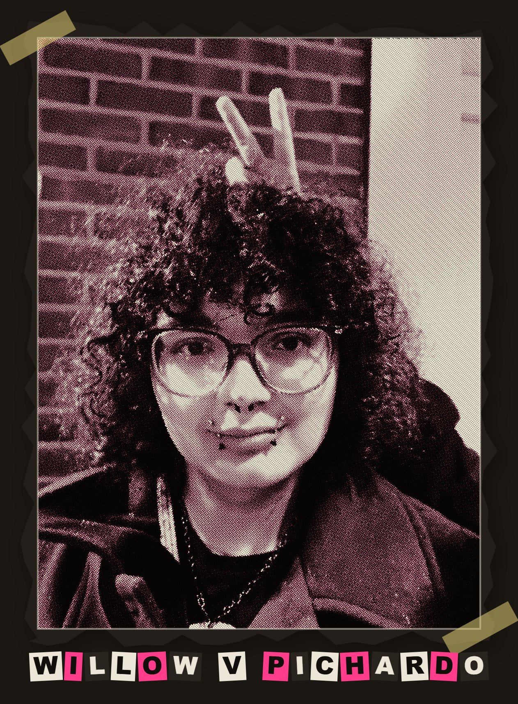

Microrings that resonate
Microring and microdisk resonators for dense wavelength-division multiplexing. I am now working towards designing systems in ANSYS Lumerical to address AI power dissipation bottlenecks.
Ambitions by day. Unfinished projects by night (finished eventually...)
EE Phd Aspirant · two research labs · table with too many projects · wants more to work on


I'm a UCONN electrical engineering student, working in two research labs and as a Circuits TA. I also have- lets see... 8 projects in progeess...
I love tackling new challenges (maybe a little too many), but the pursuit of learning always keeps me busy. Have something for me or just looking?
Integrated Photonics and Semiconductor Fabrication, a perfect match.
Microring and microdisk resonators for dense wavelength-division multiplexing. I am now working towards designing systems in ANSYS Lumerical to address AI power dissipation bottlenecks.
I built a python program to measure SiO₂ thickness on silicon with an OceanOptics HR2000+. Report in progress.
Gokirmak reminds me to focus on finishing things... I'm sure I'll get there eventually.
MJL3281A / MJL1302A outputs · ~77% efficiency near peak
A discrete power amp tweaked slightly from Rod Elliot's P217 with thermal analysis and efficiency plots. Push-pull output stage, biased and measured.
18 machines · Live Updates · PrusaLink → Firebase
Full-stack monitoring for a fleet of Bambu and Prusa printers, including a subnet auto-discovery script so new machines announce themselves instead of being added by hand.
public circuits-practice site · in use now
An open educational resource for circuit analysis, with assignment attempt-tracking I rebuilt around Firestore transactions after hunting down two interlocking bugs in the deploy pipeline.
CoreXY frame · AD5933 impedance front end
A bed-of-nails alternative: probes on a CoreXY motion system measuring impedance point-to-point, so a bare board gets tested without machining a custom fixture for it.
laser doping of silicon → p-n junction
Driving dopant into silicon with a laser to form a working junction using close to hobbyist equipment. Success criterion: one honest rectifying IV curve.
DMD projection · Elegoo Mars 4 as UV source
Homemade photolithography: a resin printer repurposed as a UV exposure unit already gave a clean first exposure in dry-film resist. Next up, a UV laser photolithography device built from a gutted MakerBot 3D Printer.
I propose repeatable, intuition building practice sets into shifting the way students learn. I also make videos to guide my students when the patches get rough. All this lives free to the public at circuitspractice.org and YouTube.
Poems, stories, essays. Some from high school, some from now.
June 2026
On the journal, the mountain, and why now is the right time to start leaving better markings.
Spring 2026
Measuring oxide thickness on silicon via Fresnel reflectance fitting with an OceanOptics HR2000+. Results: 86.99–90.36 nm, RMSE 0.0097–0.0225.
High school
A poem about a city coming apart at the seams. Contains references to gun violence.
High school
On ambition, misdirection, and getting there eventually.
High school
A short story set in a world where monsters live alongside people in poverty. Contains gun violence and death.
High school
Leaving something behind. Or trying to.
High school
On dissociation and emotional pain. Read with care.
High school
Overthinking as a way of life. Relatable content.
May 2025
A Shakespearean sonnet about deception dressed as virtue.
Feb 2024
An argument about what common sense actually is and why it isn't.
Feb 2024
A narrative poem about endurance in winter. The cold as metaphor; also just cold.
Research, collaborations, or someone who needs a problem solved.
Willow Valeria Pichardo · Storrs, CT · updated June 2026
Work like you're running out of time.